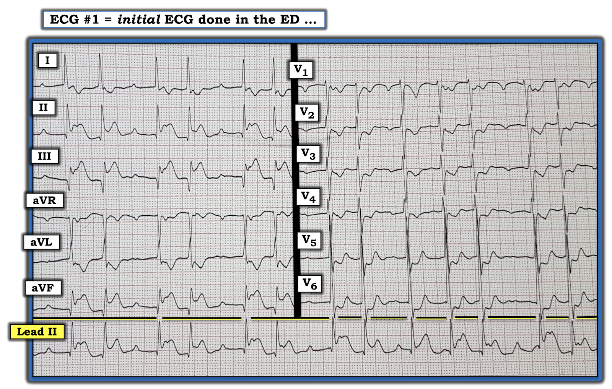
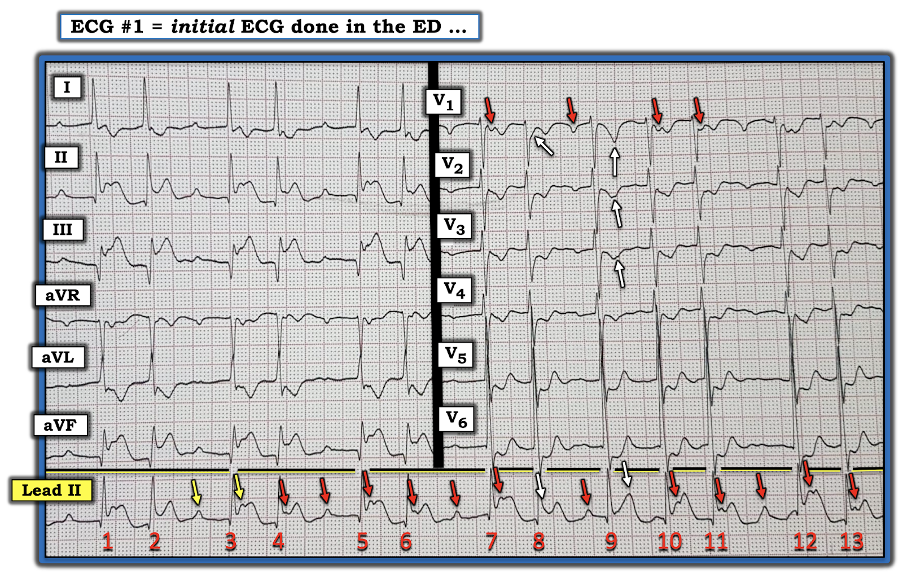
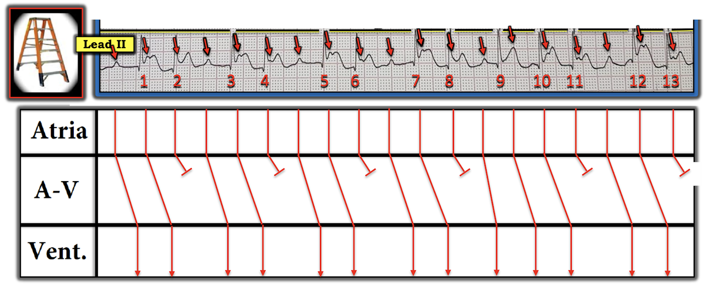
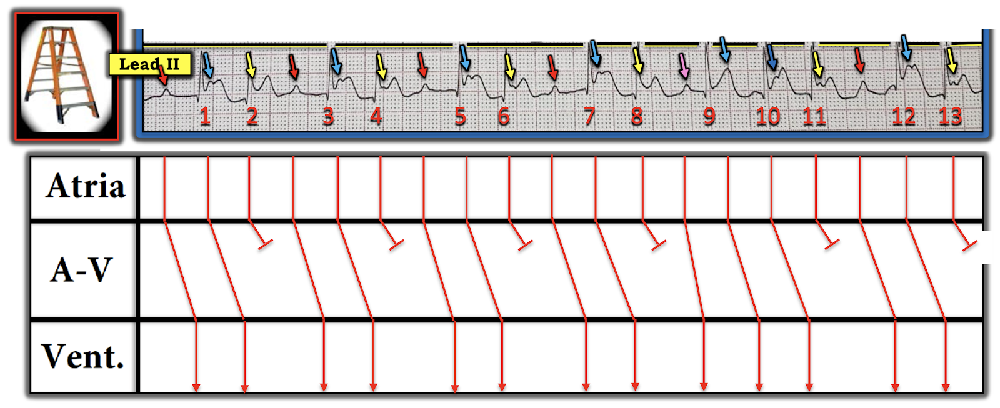

ECG Blog #224 — Nhận ra hình ảnh quen thuộc này?
Điện tâm đồ 12 chuyển đạo và dải nhịp DII dài trong Hình-1 được ghi từ một phụ nữ trung niên bị đau ngực dữ dội mới khởi phát. Bệnh nhân ổn định huyết động vào lúc ghi điện tâm đồ này.
- BẠN sẽ đọc bản ghi này như thế nào?
- Đây là nhịp gì?


=======================================
LƯU Ý #1: Tới đây, một số bạn đọc có thể muốn nghe ECG Audio PEARL dài 3:45 phút trước khi đọc Suy nghĩ của tôi về điện tâm đồ trong Hình-1. Bạn có thể xem Suy nghĩ của tôi về bản ghi này vào bất cứ lúc nào (nằm bên dưới ECG MP-41a).
=======================================

ECG Media PEARL #41a (3:45 phút Audio) hôm nay — Ôn lại CÁCH nhận ra trong vòng vài giây (!!!) một blốc AV độ 2 Mobitz I ( = Wenckebach AV) trong đó có STEMI thành dưới đang diễn ra.
Cách tiếp cận BAN ĐẦU của TÔI với điện tâm đồ trong Hình-1:
Ca này có nhiều dấu hiệu điện tâm đồ quan trọng. Dù tôi đã dùng một Cách tiếp cận hệ thống (như tôi vẫn luôn làm) để đọc cả nhịp tim lẫn điện tâm đồ 12 chuyển đạo (Xem ECG Blog #185 và Blog #205 để biết chi tiết về cách tiếp cận của tôi) — tôi đã cho phép mình cái "xa xỉ" là khoảng 10 giây để nắm các dấu hiệu chính. MẤU CHỐT: Tổng cộng tôi chỉ cần 10 giây để đi đến chẩn đoán khả dĩ:
- Biết bệnh nhân này bị đau ngực mới khởi phát — "mắt tôi bị hút ngay" vào ST chênh lên rõ ở các chuyển đạo dưới kèm ST chênh xuống soi gương ở chuyển đạo aVL. Đây rõ ràng là STEMI thành dưới cấp. Và, như rất hay gặp — có ST chênh xuống ở các chuyển đạo trước, phù hợp với tổn thương thành sau cấp kèm theo (Tổng thời gian để nhận ra điều này ~5 giây).
- Kế đến, "mắt" tôi bị "hút" vào Nhịp theo nhóm (tức là các khoảng dài–ngắn xen kẽ) trên dải nhịp DII dài. Độ dài của các khoảng R-R ngắn hơn trông gần như nhau — và độ dài của hầu hết các khoảng R-R dài hơn cũng trông rất giống nhau. Hầu như tất cả các khoảng R-R dài hơn đều có một sóng P đi trước với khoảng PR tương tự (dù dài) — nghĩa là mỗi khoảng R-R dài hơn này đều kết thúc bằng một nhát được dẫn truyền! (Tổng thời gian để nhận xét những điều này = thêm ~5 giây).
ĐIỂM THEN CHỐT (PEARL) #1: Theo kinh nghiệm của tôi, sự kết hợp của nhồi máu cơ tim thành dưới cấp + nhịp theo nhóm, trong đó thấy được sóng P, và mỗi khoảng R-R dài hơn kết thúc bằng một nhát được dẫn truyền = blốc AV độ 2 Mobitz I hầu như trong mọi trường hợp!
- Với mức độ cấp tính của bệnh nhân này (đến viện vì đau ngực mới khởi phát!) — Biết được trong thời gian tối thiểu rằng sẽ cần can thiệp cấp (lý tưởng là kích hoạt phòng thông tim để tái tưới máu cấp) — là điều thiết yếu để có kết cục tốt nhất!
Áp dụng Cách tiếp cận hệ thống với điện tâm đồ trong Hình-1:
Lát nữa tôi sẽ phân tích kỹ nhịp trên DII dài. Còn bây giờ, thấy phức bộ QRS hẹp — cho biết nhịp này là trên thất — nghĩa là ta có thể đánh giá một cách hệ thống hình dạng QRST để tìm thay đổi cấp.
- Các khoảng (PR, QRS, QTc) — Tôi sẽ bàn về khoảng PR khi phân tích nhịp (bên dưới). QRS hẹp. Khó đánh giá QTc vì khoảng R-R liên tục thay đổi từ ngắn sang dài — nhưng cùng lắm thì QTc kéo dài ở mức giới hạn.
- Trục: Bình thường (khoảng +30 độ).
- Lớn các buồng tim: Giả định xung chuẩn bình thường — có thể có LVH (tức là sóng R ở chuyển đạo V6 dường như chồng lên sóng R ở chuyển đạo V5 — nên tôi ước tính biên độ sóng R ở V6 trên 20 mm).
Về Thay đổi Q-R-S-T:
- Sóng Q: Thấy sóng Q lớn ở từng chuyển đạo dưới (II, III, aVF) — nhất là ở chuyển đạo III.
- Tăng tiến sóng R: Vùng chuyển tiếp (nơi chiều cao sóng R vượt quá độ sâu sóng S ở các chuyển đạo trước tim) hơi muộn (xảy ra giữa V4 và V5). Dù vậy — biên độ sóng R vẫn tăng tiến phù hợp khi đi từ V1 tới V3.
- Thay đổi ST-sóng T: Có đoạn ST chênh lên rõ ở từng chuyển đạo dưới. Thấy ST-T chênh xuống đáng kể ở hầu như tất cả các chuyển đạo còn lại, trừ aVR. Hình ảnh đối nghịch soi-gương "kỳ diệu" của ST-T chênh xuống soi gương (reciprocal) thấy ở chuyển đạo aVL — khi so với hình dạng các đoạn ST chênh lên ở chuyển đạo dưới.
NHẬN ĐỊNH: Như đã bàn trong ECG Blog #184 — nhận ra mối liên hệ ST-T đối nghịch soi gương "kỳ diệu" giữa chuyển đạo aVL và chuyển đạo III ở bệnh nhân đau ngực mới xuất hiện gần như là chẩn đoán tắc động mạch vành cấp.
- Chúng ta nghi tắc RCA (động mạch vành phải — Right Coronary Artery) cấp vì: i) Về mặt thống kê — 80-90% bệnh nhân có tuần hoàn "ưu thế phải", trong đó RCA chứ không phải LCx (động mạch mũ trái — Left Circumflex) đảm nhận cấp máu cho thành dưới thất trái; và, ii) Các dấu hiệu điện tâm đồ ST chênh lên ở III > II — cùng với ST-T chênh xuống rõ ở aVL gợi ý mạnh RCA là "động mạch thủ phạm".
- Có sóng Q sâu ở từng chuyển đạo dưới gợi ý rằng STEMI thành dưới này đã hình thành.
- Điện thế cao ở V6 gợi ý có thể có LVH.
- ST-T chênh xuống lan tỏa ở I, aVL và cả 6 chuyển đạo trước tim — phù hợp với sự kết hợp của: i) Thay đổi soi gương; ii) "Tăng gánh" thất trái ở các chuyển đạo bên; iii) Có thể lan tới thành sau; và, iv) Thiếu máu cục bộ lan tỏa.
- Như một dấu hiệu quan sát — sóng T ở chuyển đạo dưới nhọn thêm, nằm trên đoạn ST đang chênh lên, phù hợp với thay đổi "tối cấp". Sóng T hai pha ở V5 và V6 (với phần dương ở cuối, tiếp sau ST chênh xuống ở các chuyển đạo này) — trông như hiệu ứng "soi gương" của sóng T tối cấp ở chuyển đạo dưới.
Nhìn KỸ HƠN vào nhịp tim:
Tôi thường nhấn mạnh rằng thao tác đơn giản là đánh dấu sóng P giúp ích rất nhiều để thấy được cả những mối liên hệ phức tạp giữa hoạt động nhĩ và các phức bộ QRS lân cận.
- ĐIỂM THEN CHỐT (PEARL) #2: Tôi hoàn toàn thừa nhận rằng ban đầu tôi đã không thấy hết các sóng P trong Hình-1. Khi tìm hoạt động nhĩ lúc nghi có nhịp sóng P đều ở bên dưới (như tôi đã nghi trong ca hôm nay) — tôi bắt đầu bằng một lượt "quét" nhanh bản ghi, cố tìm ra một chỗ trong nhịp mà ở đó tôi có thể khá chắc chắn rằng mình thấy 2 sóng P liên tiếp (mũi tên VÀNG trong Hình-2).
- Đặt compa đo (calipers) theo khoảng P-P bằng khoảng cách giữa 2 mũi tên VÀNG này — tôi thấy mình có thể "dò theo" hoạt động nhĩ đều (mũi tên ĐỎ) — với 2 ngoại lệ khả dĩ (mũi tên TRẮNG).
- ĐIỂM THEN CHỐT (PEARL) #3: Không chỉ "hợp lý" khi cho rằng gần như chắc chắn có sóng P xoang ẩn dưới các mũi tên TRẮNG — mà áp dụng khái niệm "các chuyển đạo ghi đồng thời" còn cho phép ta chứng minh điều đó. Ngoài việc sóng T của nhát #9 nhọn hơn trên DII dài — các mũi tên TRẮNG ở các chuyển đạo trước ghi đồng thời cho thấy sóng T ở V1 có đỉnh âm sâu hơn, và có khía "tố cáo" ở V2 và V3. Tuy sóng P xuất hiện ngay sau nhát #8 còn ẩn tinh tế hơn nữa — mũi tên TRẮNG thứ 1 ở V1 chỉ vào một chỗ gấp góc ở đỉnh nhánh lên của sóng S mà không có sóng S nào khác ở V1 có. Sử dụng các chuyển đạo ghi đồng thời là một kỹ thuật vô giá để phát hiện và/hoặc xác nhận hoạt động nhĩ tinh tế chỉ thấy rõ ở một số chuyển đạo.


Vẽ GIẢN ĐỒ BẬC THANG (LADDERGRAM):
Giờ đã xác lập được có hoạt động nhĩ đều — tôi đã vẽ một Giản đồ bậc thang để minh họa cơ chế của nhịp trong ca hôm nay (Hình-3)
- Các mũi tên ĐỎ ở Tầng Nhĩ trong Hình-3 cho thấy sóng P xuất hiện đều, ở đây với tần số nhanh ~130/phút.
- Có 5 nhóm 2 nhát — và 1 nhóm 3 nhát ( = các nhát #9,10,11). Trong mỗi nhóm — khoảng PR dài dần cho tới khi một nhát bị rớt. Vì vậy — nhịp này là blốc AV độ 2, Mobitz I — chủ yếu với dẫn truyền AV 3:2, và ở nhóm 3 nhát duy nhất là dẫn truyền AV 4:3.
- T.B. (P.S.) Còn có cả blốc AV độ 1, như giải thích bên dưới.


Hiểu rõ hơn GIẢN ĐỒ BẬC THANG:
Lý do khó nhận ra dẫn truyền Wenckebach trong ca hôm nay — là tần số nhĩ nhanh, và do đó, hầu hết sóng P bị ẩn trong các đoạn ST. Để dễ theo dõi giản đồ bậc thang tôi vẽ trong Hình-3 — tôi đã tô màu chọn lọc các sóng P theo vai trò của chúng trong rối loạn nhịp (Hình-4).
- Các manh mối MẤU CHỐT để giải mã rối loạn nhịp này là: i) Nhận ra nhịp theo nhóm, mà trong bối cảnh STEMI thành dưới cấp thì cho bạn biết ngay rằng nhịp này có lẽ là Mobitz I; và, ii) Nhìn vào các sóng P xuất hiện ở cuối mỗi khoảng ngưng ngắn (tức là nhìn vào 5 sóng P màu đỏ và 1 sóng P màu hồng trong Hình-4).
- Tất cả các sóng P đỏ đều có khoảng PR giống hệt nhau. Điều này cho biết mỗi sóng P đỏ này chắc chắn được dẫn truyền, dù với khoảng PR kéo dài (~0.35 giây). Các sóng P đỏ này tạo ra nhát được dẫn truyền thứ 1 trong mỗi nhóm của 5 nhóm 2 nhát (và chúng dẫn truyền với blốc AV độ 1).
- Sóng P thứ 2 trong mỗi nhóm có màu xanh nhạt. Như thấy trên giản đồ bậc thang — mỗi sóng P xanh nhạt này đều được dẫn xuống thất, dù với khoảng PR hơi dài hơn so với các sóng P đỏ.
- Sóng P thứ 3 trong mỗi nhóm 2 nhát có màu vàng. Các sóng P vàng này xuất hiện rất sớm trong đoạn ST — và do đó, chúng không được dẫn xuống thất.
- Sau mỗi sóng P vàng này có một khoảng ngưng ngắn — tiếp sau đó là một sóng P đỏ dẫn truyền với cùng khoảng PR kéo dài để bắt đầu chu kỳ kế tiếp.
- Diễn biến hơi khác ở nhóm 3 nhát duy nhất ( = các nhát 9,10,11). Nhóm này bắt đầu bằng một sóng P hồng — mà vì những lý do tôi không giải thích được, lại dẫn truyền với khoảng PR ngắn hơn so với từng sóng P đỏ.


TÓM TẮT: Hãy tập tư duy rằng NẾU bạn thấy nhịp theo nhóm trên một dải nhịp dài ở bệnh nhân có nhồi máu cơ tim thành dưới cấp rõ ràng — thì khả năng cao nhịp theo nhóm này là Wenckebach AV ( = blốc AV độ 2 Mobitz I).
- NẾU thấy sóng P với cùng một khoảng PR trước mỗi khoảng ngưng — bạn gần như đã xác nhận được chẩn đoán.
- Xác nhận cuối cùng sẽ có được nếu giờ bạn có thể "dò theo" các sóng P đều có thể đang ẩn trong đoạn ST chênh lên.
- Về lâm sàng — Nhận ra kịp thời Mobitz I đi kèm nhồi máu cơ tim thành dưới cấp giúp tối ưu hóa điều trị. Tôi dám chắc giờ đây bạn sẽ chẩn đoán được điều này chỉ trong vài giây!
==================================
Lời cảm ơn: Xin cảm ơn Abdullah Al Mamum và Shomi Ganguly (đến từ Dhaka, Bangladesh) đã cho tôi biết ca này và cho phép tôi sử dụng bản ghi này.
==================================
Các bài ECG Blog liên quan tới ca hôm nay:
- ECG Blog #185 — Cách tiếp cận hệ thống để đọc nhịp.
- ECG Blog #205 — Ôn lại Cách tiếp cận hệ thống của tôi để đọc điện tâm đồ 12 chuyển đạo.
- ECG Blog #188 — Ôn lại CÁCH đọc và vẽ Giản đồ bậc thang.
- ECG Blog #184 — Ôn lại mối liên hệ chuyển đạo 3–chuyển đạo aVL "kỳ diệu" trong OMI cấp (nhồi máu cơ tim do tắc — Occlusion-based Myocardial Infarction).
- ECG Blog #55 — Ôn lại một ca tương tự ca hôm nay!
- ECG Blog #164 — Ôn lại một minh họa giản đồ bậc thang khác theo từng bước.